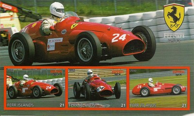
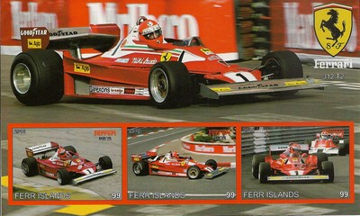
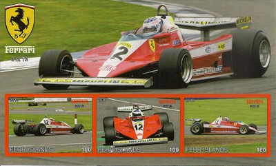
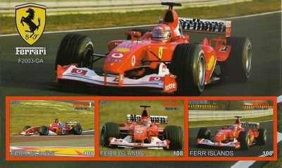
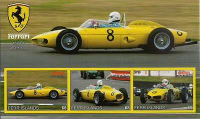
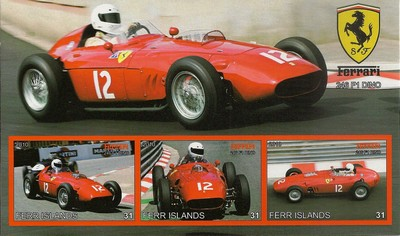

Ferr Islands
|
 Issue date: 2010 A mini souvenir sheet featuring the Ferrari 625 F1. For the 1954 season and the return to Formula 1 engine regulations, Ferrari 500 chassis were modified for the new regulations with the 2.5-litre 625 engine and would win two more races, one each in 1954 and 1955, although it was not quite fast enough compared to the Mercedes-Benz W196 and Maserati 250F. Despite two new models appearing during this period the 625 was not completely replaced until 1956 when Ferrari began using the D50 chassis Ferrari purchased along with the Lancia Formula One team.  Issue date: 2010 A mini souvenir sheet featuring the Ferrari 312 T2. The 312T2 was the second iteration of the 312T series of cars which was used from 1975 to 1980. The car was powered by the powerful and ultra-reliable flat-12 engine which gave about 510 bhp, the 'T' in the name stood for transverse, as the gearbox was mounted in this way, improving the car's handling characteristics.  Issue date: 2010 A mini souvenir sheet featuring the Ferrari 312 T3. The 312T3 was the third iteration of the 312T series of cars which was used from 1975 to 1980. The car was powered by the powerful and ultra-reliable flat-12 engine which gave about 510 bhp, the 'T' in the name stood for transverse, as the gearbox was mounted in this way, improving the car's handling characteristics. In the T3, the chassis was completely new, with a monocoque structure and a different suspension arrangement, designed to work with the Michelin tyres. The bodywork had a flatter top to the body, allowing improved air flow to the rear wing.  Issue date: 2010 A mini souvenir sheet featuring the Ferrari 312. The 312 was used from 1966 to 1969; for the 1966 F1 season, there was a change in the technical regulations, now allowing 3 litre engines. The F1 teams, even though asking for "the return to power", were more or less surprised and not well prepared. The designation 312, which would be used for a number of later cars, indicated a 3 litre, 12 cylinder engine.  Issue date: 2010 A mini souvenir sheet featuring the Ferrari F2003-GA. The F2003-GA was driven by Michael Schumacher and Rubens Barrichello - Ferrari took both championships with this car (Schumacher being the drivers champion). The car was designated 'GA' as a mark of respect to Gianni Agnelli, the recently deceased head of Fiat.  Issue date: 2010 A mini souvenir sheet featuring the Ferrari 641. Ferrari's major coup was signing reigning champion Alain Prost from McLaren for the 1990 season to partner Nigel Mansell. As such, the 641 was designed with Prost's smooth driving style in mind. The car was seen to be technically advanced as it included the semi-automatic gearbox developed in the previous season.  Issue date: 2010 A mini souvenir sheet featuring the Ferrari 640. The 640 was used for the 1989 F1 season, the car was fast but very unreliable. It was powered by Ferrari's own 3.5 litre V12 engine - the team's first naturally aspirated engine for almost a decade. The car also contained the very first 7-speed semi-automatic gearbox seen in F1 and it was this that caused most of the retirements. Despite the unreliable gearbox, Ferrari finished 3rd in the constructors' championship.  Issue date: 2010 A mini souvenir sheet featuring the Ferrari 126 C4. The 126 C4 was the last in a series of cars used from 1981 to 1984 - the 126 was Ferrari's first attempt at a turbo engined F1 car.  Issue date: 2010 A mini souvenir sheet featuring the Ferrari 312 F1.  Issue date: 2010 A mini souvenir sheet featuring the Ferrari 156. The 156 was made by Ferrari in 1961 to comply with the then-new F1 regulations that lowered engine displacement from 2.5 to 1.5 litres. The 1961 version was affectionately dubbed 'sharknose' due to its characteristic air intake 'nostrils'. Then-Ferrari factory policy inevitably saw all the remaining sharknose 156s scrapped by the end of the 1963 season.  Issue date: 2010 A mini souvenir sheet featuring the Ferrari 246 F1. The 246 F1 was built for the 1958 F1 season. The regulations for 1954 to 1960 limited naturally aspirated engines to 2500cc and for the 1958 season there was a change from alcohol fuels to AvGas. The 246 F1 was good enough to allow Mike Hawthorn to win the world championship. The Ferrari 246 was the first V6 engined car to compete in F1; it was also the last front engined car to win an F1 grand prix (1960 Italian grand prix).  Issue date: 2010 A mini souvenir sheet featuring the Ferrari D50. Originally the Lancia D50, this car made use of many innovative features, such as the use of the engine as a stressed chassis member, the off-centre positioning of the engine to allow a lower overall height, and pannier fuel cells for better weight distribution and aerodynamics. |